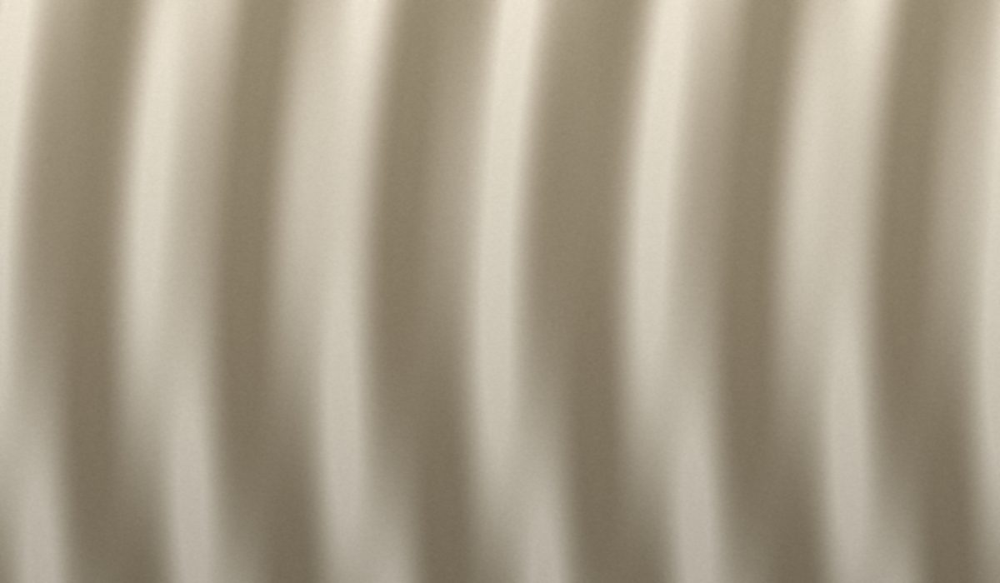

Tendances
Le lin, la matière de l'été qui s'invite en hiver
Longtemps réservé aux vacances, le lin revient dans les vestiaires toute l'année. Superposé, épais ou mélangé à la laine, il change de saison.
Par la rédaction · 12 novembre 2026 · 4 min de lecture

Pendant des années, le lin a eu une image simple : une chemise blanche, une plage, un été chaud. Aujourd'hui, les créateurs l'utilisent autrement. On le trouve dans des vestes, des pantalons larges et même des manteaux doublés.
Une matière qui respire
Le lin laisse passer l'air et sèche vite. En hiver, porté sous un pull ou une veste en laine, il évite d'avoir trop chaud dans le métro ou au bureau. C'est cette idée de superposition qui le rend utile toute l'année.
« Le lin n'est plus une pièce de vacances, c'est une base du vestiaire. »
Comment le porter cet hiver
- Une chemise en lin sous un gros pull en laine
- Un pantalon large en lin épais avec des bottines
- Des couleurs sable, écru ou chocolat plutôt que le blanc
Dernier avantage : un vêtement en lin de bonne qualité dure longtemps. Il s'adoucit à chaque lavage. Une bonne raison de le garder dans son placard toute l'année.